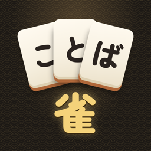

ことば雀 サポート
ことば雀（ことばじゃん） - ひらがな麻雀
「ことば雀」は、ひらがなの牌で単語を作る麻雀です。手牌を並べ替えて、2文字の単語1つと3文字の単語4つを作るとアガリ。果物・乗り物のように同じ分類の単語を揃えるほど、点数が上がります。
よくある質問
無料で何回遊べますか？
「1局」は1日2回、「早並べ」は1日3回、「今日の二十手」はその日の1回目を無料で遊べます。回数は毎日0時に戻ります。「並べ替えパズル」は最初の2問が無料で、次の日からは1日1問ずつ次の問題を開けられます。広告はありません。買い切り（遊び放題）にすると、1局も東風戦も、ほかの遊びも何回でも遊べ、パズルも全問開き、友だちと対戦の部屋も作れます。
購入したのに、遊び放題になりません。
タイトル画面の「設定」 → 「購入を復元」を押してください。購入したときと同じ Apple アカウントでサインインしている必要があります。
ある言葉が単語になるか調べたい。
ことば雀の辞書を引くで、読みを入れると、単語になるか・どの分類に入っているかと、同じ牌で作れる語が分かります。
単語にならない言葉があります。カテゴリがおかしい言葉があります。
対局中のメニュー、または局の結果の「単語を報告」から知らせてください。単語のデータは kotobajan-data で公開していて、報告はそこで受け付けています（GitHub のアカウントが必要です）。アカウントをお持ちでない方は、下のメールアドレスでも受け付けます。
友だちと対戦するには？
タイトル画面の「対局」→「部屋を作る・合言葉で入る」で、1人が部屋を作り（買い切りが必要です）、出てきた「すいか・ふくろう」のような合言葉をほかの人に伝えます。ほかの人は「合言葉で入る」に入れて部屋に入ります（無料で入れ、無料の回数に数えません）。2〜4人がそろったら、部屋を作った人が「始める」を押します。
友だちと対戦の部屋に入れません。途中でつながりが切れました。
みなが最新のバージョンのアプリを使っているか確かめてください（辞書の版が違うと同じ部屋に入れません）。対局の途中でつながりが切れても、アプリに戻れば続きから遊べます。切れている間は、自分の番は自動で進みます。
途中でやめた対局の続きを遊べますか？
対局は自動で保存されます。次に開いたとき、タイトル画面の「続きから」で続きを遊べます。
遊び方が分かりません。
タイトル画面の「遊び方」で、ルールを順に説明しています。対局中もメニューから開けます。
お問い合わせ
不具合のご報告やご要望は、次のメールアドレスまでお願いします。お使いの端末（例：iPhone 16）と iOS のバージョンを添えていただけると助かります。
sukima.apps.dev@gmail.com
Kotoba-jan Support
Kotoba-jan (ことば雀) is a mahjong game played with hiragana tiles. Rearrange your hand into one 2-letter word and four 3-letter words to win. Collecting words of the same kind, such as fruits or vehicles, raises your score.
FAQ
How much can I play for free?
You can play two single rounds (1局) and three Speed Words (早並べ) a day for free, plus the first Daily Twenty (今日の二十手) of each day; the counts reset at midnight. The first two Anagram Puzzles (並べ替えパズル) are free, and from the next day you can open one more each day. There are no ads. The one-time purchase (Unlimited Play) lets you play single rounds, East matches (東風戦) and everything else as often as you like, opens every puzzle, and lets you create rooms to play with friends.
I made a purchase, but it is not unlocked.
Open "設定" (Settings) on the title screen and tap "購入を復元" (Restore purchases). Make sure you are signed in with the same Apple Account you used for the purchase.
How do I play with friends?
On the title screen, tap "Mahjong" (対局), then "Create or join a room" (部屋を作る・合言葉で入る). One person creates a room (Unlimited Play is required) and shares the passphrase it shows, such as すいか・ふくろう. The others enter it under "Join with a passphrase" (合言葉で入る); joining is free and does not use free plays. With 2 to 4 players in the room, the host taps "Start" (始める).
I can't join a room, or I lost the connection during a match.
Make sure everyone has the latest version of the app (players with different dictionary versions can't share a room). If you lose the connection during a match, return to the app to continue; your turns are played for you while you are away.
How can I check whether a word counts?
Type its reading on the Kotoba-jan dictionary search to see whether it is a word, its categories, and other words made from the same tiles.
A word is not accepted, or its category is wrong.
Use "単語を報告" (Report a word) in the in-game menu or on the round result. The word data is published at kotobajan-data, where reports are accepted (a GitHub account is required). You can also email us.
Contact
For bug reports and requests, please email us. Including your device model and iOS version helps.
sukima.apps.dev@gmail.com